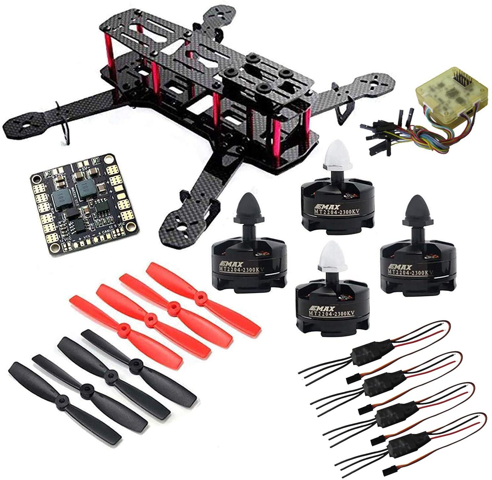

Voor de liefhebbers, hierbij een overzicht van de gebruikte componenten:
‘Quad’
- ZMR250 frame (v1)
- Naze32 Afro FC (v5)
- FrSky D4R-II ontvanger
- PDB (5V, 12V BEC functie en LED switch)
- Motoren 2204 2300KV (4S)
- BL12A oneshot125 ESCs
- DAL tri-blade props
- 4S 1400mAH 40/80c LIPO
- 700TVL FPV cam
- Lumenier 25mW Raceband VTX
- 5.8GHz Circular Mushroom ant
- ‘Groundcontrol/station’
- FrSky Taranis X9D Plus (16ch zender)
- Boscam VRX +(3S/4500mAH LIPO)
- 5.8GHz Circular Mushroom ant
- Zeiss Cinemizer OLED videobril
Bouw kit foto ZMR250
